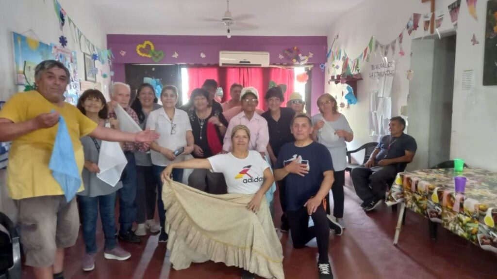
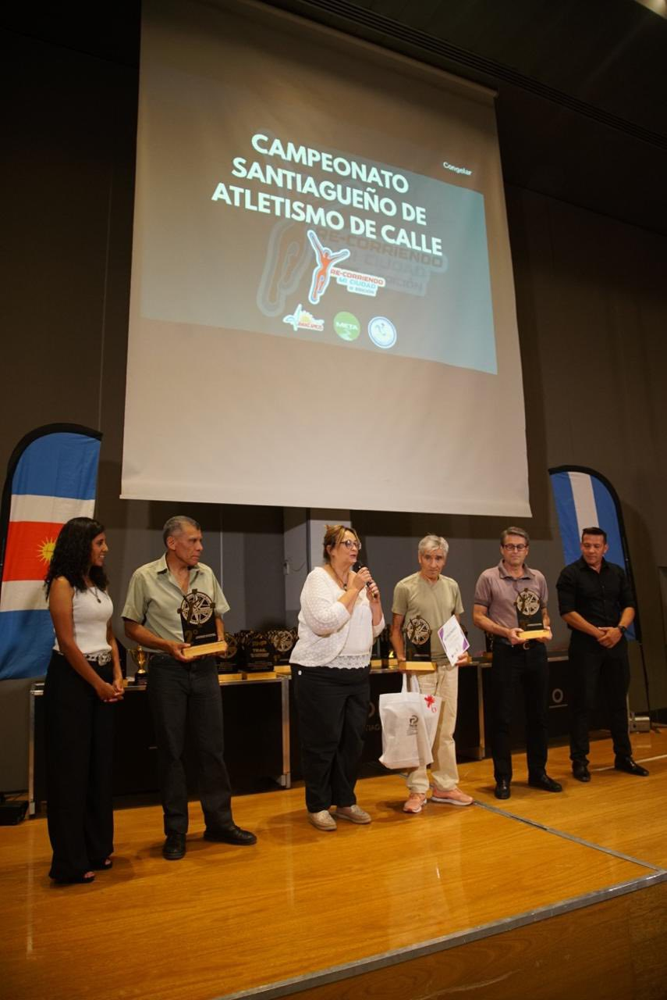
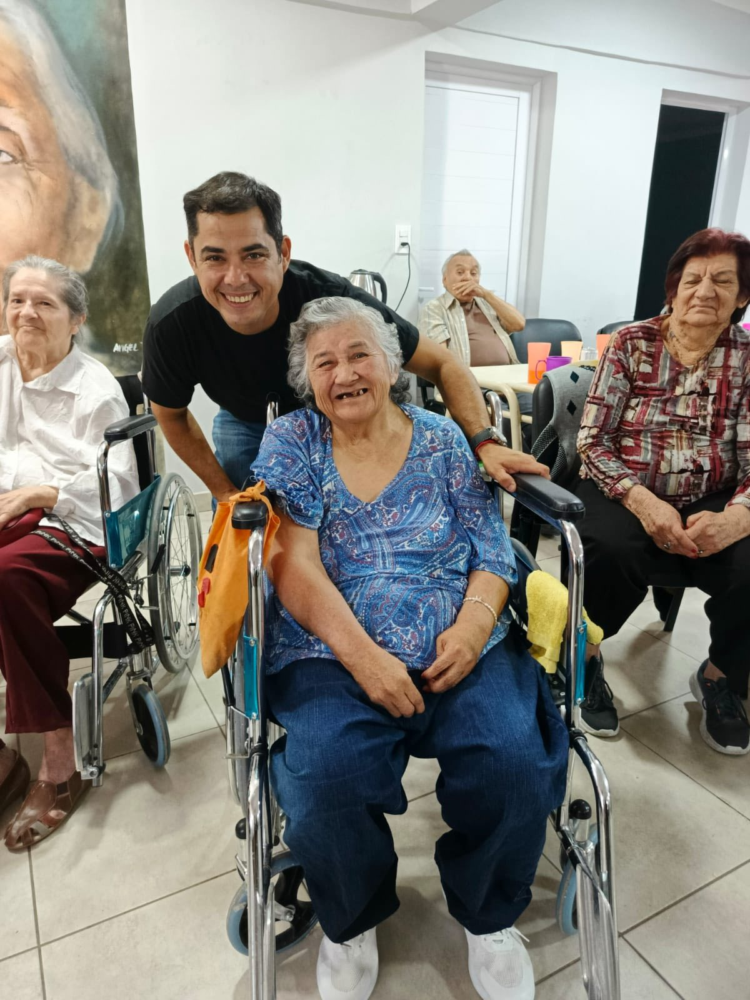
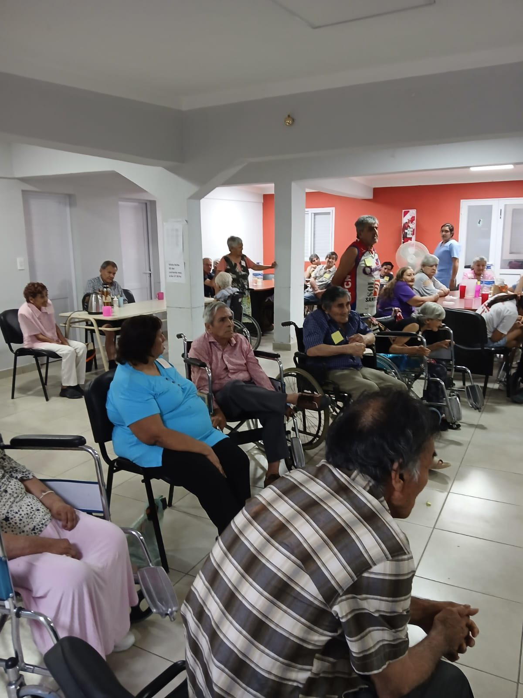

Dirección General de Desarrollo Social
La Dirección General de Desarrollo Social tiene como misión brindar asistencia transitoria a grupos familiares en situación de vulnerabilidad social, proporcionando orientación y ayuda para solucionar situaciones de desequilibrio por carencias de orden económico, social y cultural, mediante políticas sociales provenientes del Estado que garantizan y aseguran el bienestar de los ciudadanos.
Asistencia Directa
Intervención en problemáticas sociales. La asistencia directa es canalizada a través de la entrega de alimentos y de todo producto de primera necesidad: camas, colchones, frazadas, calzados, mesa, sillas, chapas.
Requisitos para solicitar Asistencia Directa
- Nota dirigida al Sr. Ministro Dr. Ángel Niccolai (donde conste la demanda, la referencia del lugar donde habita y teléfono o celular de contacto).
- Fotocopia del DNI 1° y 2° hoja del solicitante y del grupo familiar.
- Certificado de residencia.
- Dos números de teléfonos de contacto.
Microemprendimiento — Plan Provincial Santiago Productivo
Área de Economía Social. Promueve la inclusión social de las personas a través de la generación de puestos de trabajo, mediante el fortalecimiento de micro emprendimientos existentes o a crearse.
- Promover la inclusión social mediante generación de empleo en el ámbito privado.
- Apoyar emprendimientos con posibilidad de colocación de productos en el mercado.
- Fortalecer estrategias de desarrollo local a través del apoyo y financiación.
- Generar capacidad de captación de mano de obra propia y de terceros.
Financiación disponible
- Subsidio no reintegrable: hasta $60.000 (Pesos Sesenta Mil)
- Préstamos reintegrables: hasta $200.000 (Pesos Doscientos Mil) con interés del 12% mensual y garante.
- Actividades financiables: taller de costura, carpintería, herrería, artesanías, tapicería, peluquería, plomería, electricidad, reparación de TV y PC, zapatería, mecánica de motos, chapa y pintura, entre otras.
Formularios disponibles en Mesa de Entradas del Ministerio — Saenz Peña 340, Santiago del Estero. Tel: (385) 428-3140 int. 146 — Email: economiasocialsgo2017@gmail.com
Monto total aplicado 2024: 94 micros otorgados — $12.778.145,92
Comedores Comunitarios
Refuerzo alimentario para niños y niñas de hogares con necesidades básicas insatisfechas. Combate la desnutrición y promueve la inclusión social a través de una alimentación nutritiva y accesible.
- Alimentación nutritiva para niños y niñas en situación de vulnerabilidad.
- Atención a menores en riesgo nutricional.
- Combate de la desnutrición infantil.
- Inclusión social a través de espacios comunitarios.
- Articulación con organizaciones civiles y comunitarias.
Dirección General de Adultos Mayores
La Dirección General de Adultos Mayores brinda servicios integrales para la atención y cuidado de adultos mayores en situación de vulnerabilidad social, garantizando su bienestar, dignidad y calidad de vida.
Programa Adultos Mayores
- Hogares diurnos para adultos mayores.
- Residencias de larga estadía.
- Centros de rehabilitación y recreación.
- Atención especializada y seguimiento social.
- Actividades deportivas, culturales y recreativas.
- Talleres de integración y participación comunitaria.




Residencia "Mamá Antula"
La Residencia "Mamá Antula" es un hogar de larga estadía para adultos mayores que no pueden ser atendidos en su entorno familiar. Ofrece atención integral, cuidados médicos, alimentación y actividades recreativas en un ambiente de respeto y dignidad.
- Atención médica y de enfermería permanente.
- Alimentación balanceada y nutritiva.
- Actividades recreativas, culturales y terapéuticas.
- Acompañamiento psicológico y trabajo social.
- Ambiente familiar y de contención afectiva.

Contacto — Dirección General de Adultos Mayores
Directora: Sra. Lucia del Carmen Witte
Dirección: Saenz Peña N° 340, Santiago del Estero (4200)
Teléfono: (0385) 4283139
Tarjetas Sociales y Celíacos
El programa de Tarjetas Sociales brinda un aporte económico mensual destinado a la compra de alimentos para familias en situación de riesgo social y nutricional de la provincia de Santiago del Estero.
Programa Tarjetas Sociales para Familias
- Aporte mensual para la compra de alimentos.
- Destinado a familias en situación de vulnerabilidad social y nutricional.
- Fácil acceso en comercios habilitados de la provincia.
- Actualización periódica de montos y beneficiarios.
Programa Celíacos
- Tarjeta especial para la compra de alimentos libres de gluten.
- Destinada a personas con diagnóstico de enfermedad celíaca.
- Financiado con fondos nacionales.
- Monto mensual actualizado según necesidades nutricionales.
Comedores Escolares
Brindar un refuerzo alimentario a las escuelas de nivel primario e inicial de jornada simple, jornadas completas y extendidas de la provincia, de acuerdo a las leyes vigentes nacionales, provinciales y convenios celebrados.
- Desayuno fortificado para todos los alumnos de nivel inicial y primario.
- Transferencia de dinero como complemento del desayuno.
- Almuerzo para jornadas extendidas y completas.
- Impacto: 191.981 alumnos beneficiados.
- Inversión 2020: $1.481.338.364.